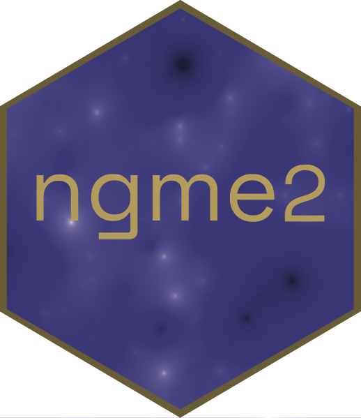

The x y location of the border of the swamp of Cienaga Grande in Santa Marta, Colombia
Source:R/info_datasets.R
cienaga.border.RdThe data is of dimension 472 * 2. It contains the x and y coordinates of the border of the swamp.

R/info_datasets.R
cienaga.border.RdThe data is of dimension 472 * 2. It contains the x and y coordinates of the border of the swamp.